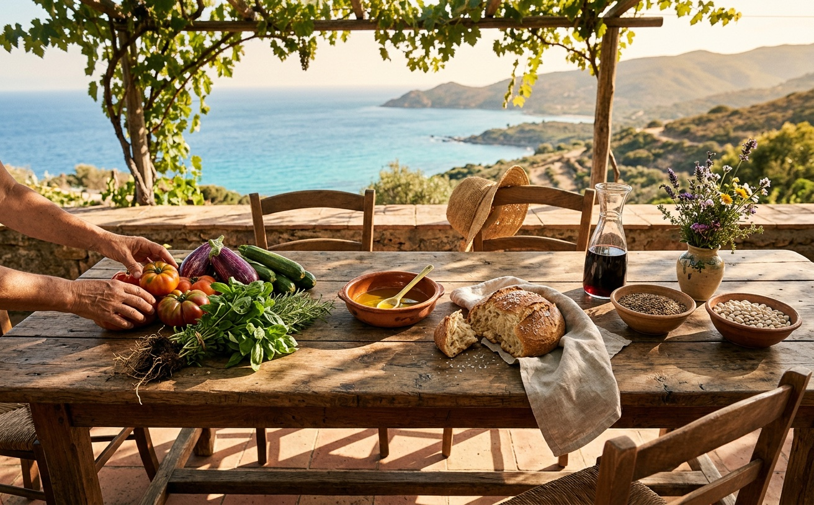

Longevity beginnt auf deinem Teller
Longevity bedeutet wörtlich Langlebigkeit. Es geht nicht um Perfektion. Nicht um Verzicht. Keine komplizierten Regeln. Sondern um einfache Gewohnheiten, die sich über Jahre hinweg wiederholen.
Was Longevity wirklich bedeutet
Nicht alles zu optimieren. Sondern den eigenen Alltag so zu gestalten, dass er dich langfristig trägt. Es geht nicht nur um Jahre, sondern um die Qualität dieser Jahre.
- Wie du dich morgens fühlst
- Wie stabil deine Energie über den Tag ist
- Wie klar du denken kannst
- Wie gut dein Körper mit dem umgehen kann, was der Alltag mit sich bringt
Ein Zusammenspiel aus
- Körperlicher Stabilität
- Mentaler Klarheit
- Emotionalem Gleichgewicht
In den Blue Zones
In Sardinien, Ikaria und Okinawa zeigt sich ein gemeinsames Muster: Essen, das nährt. Bewegung, die selbstverständlich ist. Ein Alltag, der nicht gegen den Körper arbeitet, sondern mit ihm.